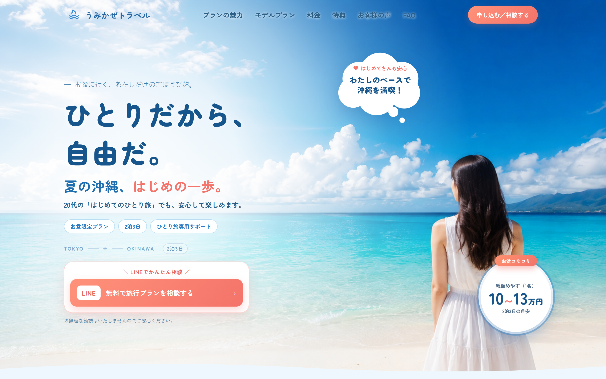
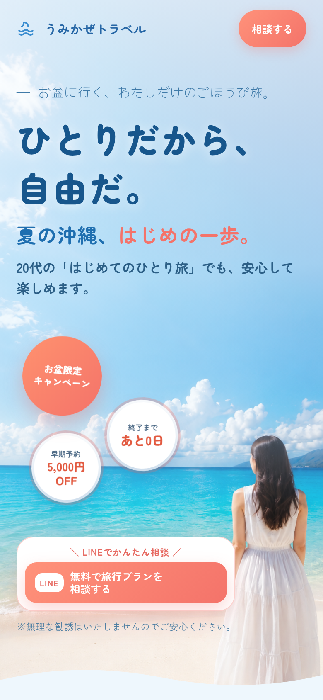
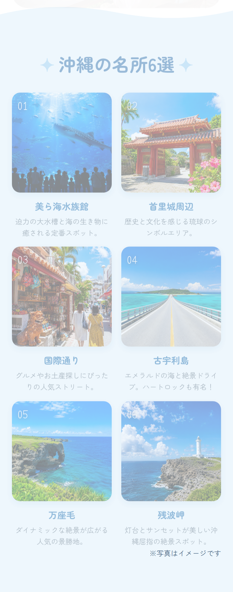
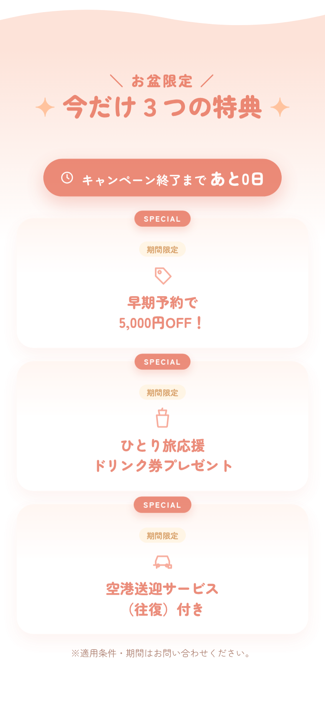

WORK 01
うみかぜトラベル




Purpose制作目的
SNSや検索から訪れた20代女性に、「ひとりでも安心して沖縄を楽しめる」ことを伝え、LINEでの相談・申し込みにつなげることを目指しました。
Design Point工夫したポイント
爽やかな海と空の写真を活かし、お盆限定の特典やカウントダウン、沖縄の名所紹介を盛り込むことで、初めてのひとり旅でも具体的にイメージしやすい構成にしました。